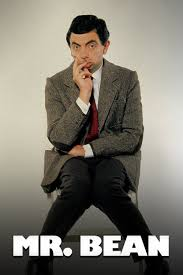
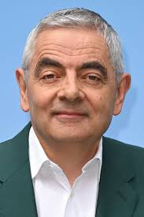

Historia
Mr. Bean é uma das criações mais icônicas de Rowan Atkinson e um marco da comédia britânica.
Lançada
em 1990, a série apresenta um personagem quase mudo, atrapalhado e de humor físico, que
transforma
situações cotidianas em momentos hilários. Inspirado no estilo do francês Jacques Tati,
Atkinson
construiu um tipo universal, compreendido em qualquer cultura graças às expressões faciais
exageradas e ao humor visual.
O programa rapidamente se tornou um fenômeno, conquistando cerca de 18 milhões de
telespectadores no
Reino Unido em seu auge e recebendo prêmios internacionais como a Rosa de Ouro de Montreux
(1990) e
um Emmy Internacional (1991). O sucesso ultrapassou fronteiras: Mr. Bean ganhou filmes, como
Bean –
A Última Catástrofe (1997) e As Férias de Mr. Bean (2007), além de uma série animada lançada
em
2002.
Mais do que um personagem, Bean virou um símbolo da comédia física moderna, reconhecido
mundialmente
e lembrado por sua simplicidade cômica. Até hoje, continua presente em reprises, animações e
participações especiais, como na cerimônia de abertura dos Jogos Olímpicos de Londres em
2012.

Historia
Rowan Atkinson iniciou sua formação na Escola de Coristas da Catedral de Durham e estudou
engenharia
elétrica em Newcastle, antes de seguir para Oxford, onde fez mestrado. Foi nesse período que
começou
a explorar seu talento cômico, desenvolvendo expressões faciais e um humor peculiar que se
tornariam
sua marca registrada. Em Oxford, trabalhou com Richard Curtis e Howard Goodall, e juntos
participaram do Festival de Edimburgo, onde Atkinson brilhou com um esquete de professor que
lhe
trouxe notoriedade. Logo depois, ganhou projeção nacional com o programa satírico Not the
Nine
O’Clock News em 1979. Em 1981, tornou-se o mais jovem a estrear um show solo no West End de
Londres.
O grande salto veio com Blackadder (1983), série criada com Curtis e, posteriormente, Ben
Elton. A
produção retratava diferentes versões do personagem Edmund Blackadder ao longo da história,
sempre
acompanhado de seu fiel criado Baldrick. A série consolidou Atkinson como um dos maiores
nomes da
comédia britânica.
Em 1990, surgiu Mr. Bean, personagem quase mudo, atrapalhado e de humor físico, inspirado em
Jacques
Tati. O programa conquistou milhões de fãs, recebeu prêmios internacionais e tornou-se um
fenômeno
cultural. O sucesso levou à criação de filmes como Bean (1997) e As Férias de Mr. Bean
(2007), além
de uma série animada em 2002. Atkinson ainda reviveu o personagem em eventos especiais, como
na
abertura dos Jogos Olímpicos de Londres em 2012.
Assim, sua trajetória vai da formação acadêmica em engenharia até se tornar um ícone mundial
da
comédia, reconhecido tanto por sua versatilidade em Blackadder quanto pela universalidade de
Mr.
Bean.
